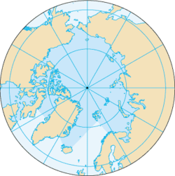

Oceanul Arctic sau Oceanul Înghețat este un ocean situat în principal în regiunea Polului Nord și este cel mai mic din cele cinci oceane a lumii, fiind cel mai puțin adânc dintre acestea. Cu toate că Organizația Internațională Hidrografică, IHO îl clasifică ca ocean, unii oceanografi numesc acest corp Marea Arctică Mediterană sau mai simplu Marea Arctică, clasificându-l ca Marea Mediterană a Oceanului Atlantic.
Deși este cel mai mic ocean al planetei (suprafața sa fiind de 14.090.000 de km2) este mai întins ca Europa. Are o formă aproape circulară, fiind centrat pe Polul Nord geografic al planetei. Este delimitat de țărmurile nordiceale continentelor Europa și Asia (Siberia) și America de Nord, precum și de cele ale insulei Groenlanda. Comunică liber cu apele Oceanului Atlantic si numai printr-o îngustă strâmtoare cu Oceanul Pacific.
Țărmurile celor trei continente care îl marginesc sunt foarte crestate, rezultând numeroase peninsule, golfuri, estuare și fiorduri.Una din caracteristicile acestui ocean este aceea că nu are contact direct cu toate continentele care îl delimitează, ci prin intermediul marilor mărginașe.O altă caracteristică importantă a acestui ocean o constituie prezenta ghieții: mai mult de jumătate din suprafața sa, pe timpul verii și peste trei pătrimi, în timpul iernii, este acoperită de o imensă calotă de gheață centrată pe Polul Nord. În Oceanul Arctic există două importante drumuri maritime:
cel de Nord-Est, care reprezintă calea ce3 mai scurtă, prin nordul Siberiei, intte vestul (portul Murmansk) și estul Rusiei (portul Vladivostok)
cel de Nord-Vest, care străbate apele arctice prin nordul continentului american, de la Atlantic la Pacific.
Multă vreme inaccesibile, astăzi cele două rute maritime sunt utilizate în mod frecvent, grație spărgătoarelor de gheață și navelor de construcție specială.
Oceanul Arctic are o climă polară aspră, influiențată în tot cursul anului de mase de aer polar rece. Zona Oceanului Arctic este caracterizată prin temperaturi foarte scăzute, favorizînd formarea ghețurilor.Iarna temperatura aerului variază de la -32-36° C. Vara temperatura medie e 0-1 C. Cantitatea anuală de precipitații variază între 75 și 500 mm. Dinspre Oceanul Atlantic, sub acțiunea vînturilor de vest, în Oceanul Arctic pătrunde un șuvoi de apă caldă – Curentul Atlanticului de Nord. Aceasta ajunge pînă în Marea Norvegiei și în Marea Barents, împlînzind clima lor într-atît încît mările nu îngheață. Datorită noilor informații opținute de la sateliți în ultimii ani, s-a ajuns la concluzia că extinderea gheții și a ghețarilor este mult mai mare decît s-a crezut în trecut. Zonele cu pericol de gheață se întîlnesc la latitudini mari, peste 45-50°, dar s-au întîlnit sloiuri și ghețari și la latitudini mai mici, pîna la 35°
În trecut Oceanul Arctic avea în el un șir de insule,în prezent scufundate,multe dintre ele se aflau pe teritoriul platformei Asiatice,dar și în jurul celorlalte continente(America de Nord și Europa) Regatul unit și-a propus să-și însușească unele dintre aceste insule pentru ca să poata controla bazinul arctic și drumul maritim de nord dar și pentu a exploata bogățiile naturale ale fundului oceanic și de ce nu a insulelor.În privința acestui proiect grandios,a Reginei mărilor de pe atunci Marea Britanie Și-a elaborat și un flag care pe lîngă flagul flotei marine britanice mai avea și isigna unui urs polar.Printre aceste insule se numără:Președintelui,Krestianka,Keenan,Exploratorilor Polului Nord,Djillis,Kroker,Bredly,Tak-Puk ,Andreev,Sanikov,Makarov Belâi Medvedi,Makarov.Ele purtau numele de Teritoriul Arctic Britanic.